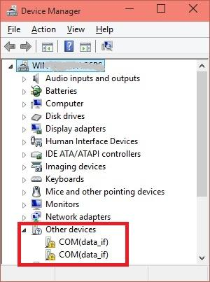
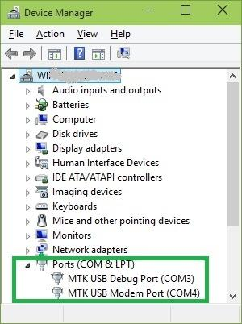
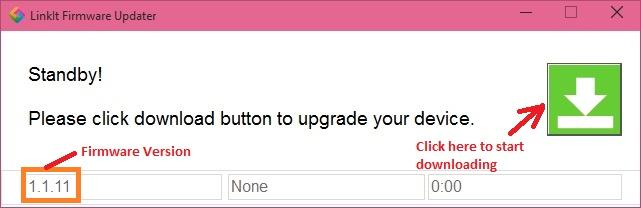
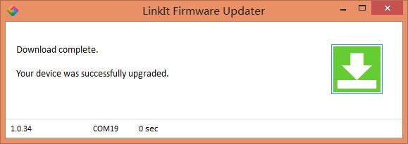

Update the firmware of LinkIt ONE
Note: This step is part of LinkIt ONE Twilio SMS Demo.
Installing Drivers
- Disable Driver Signature Enforcement if you are using Windows 8/8.1 OS. Read instructions.
- Put the MS/UART slide switch to UART position and connect LinkIt ONE to PC.
- Open Device Manager, the following COM ports will be displayed.

- Download the driver here
- After installing drivers, Device Manger should display the following two ports:
- MTK USB Debug Port used for uploading code
- MTK USB Modem Port used for printing message, such as Serial.println()

NOTE: There is no official Windows 10 driver yet. Windows 10 users can manually select the Windows 7 driver files from \LinkIt_ONE_IDE\drivers\mtk from Device Manager. This is known to work on few PCs.
Update firmware
The board you get may be not in the latest firmware, please update the firmware to make sure this demo work.
The firmware of LinkIt ONE board needs to be updated once in a while.
- Before starting the firmware update, make sure the slide switches are in proper position ( MS/UART should be in MS position. USB/BAT in USB position):


- Click the button and then connect LinkIt ONE to PC. Wait for 1 minutes for the update to complete successfully.

Copyright (c) 2008-2016 Seeed Development Limited (
www.seeedstudio.com /
www.seeed.cc)
This static html page was created from http://www.seeedstudio.com/wiki